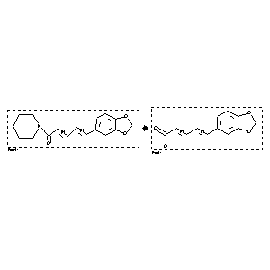

|  |
| FA | RX(1); FLST(1); RX(3) |
Reaction (1 of 1)
| Reaction ID | 3863778 |
| Reactant BRN | 90741 |
| Reactant | 1-trans,trans-piperinoyl-piperidine |
| Product BRN | 85624 |
| Product | trans,trans-piperinic acid |
| No. of Reaction Details | 3 |
Reaction Details (1 of 1)
| Reaction Classification | Preparation |
| Reagent | 10percent ethanolic NaOH |
| Solvent | ethanol |
| Citation Pointer | 5725528; Journal; Nakamura, Norio; Kiuchi, Fumiyuki; Tsuda, Yoshisuke; CPBTAL; Chem.Pharm.Bull.; EN; 36; 7; 1988; 2647-2651; |
Reaction Details (2 of 1)
| Reaction Classification | Preparation |
| Yield | 65 percent (BRN=85624) |
| Reagent | potassium hydroxide |
| Solvent | ethane-1,2-diol |
| Temperature | 180 |
| Reaction Type | Hydrolysis |
| Citation Pointer | 6224648; Journal; Koul, Surrinder; Koul, Jawahir L.; Taneja, Subhash C.; Dhar, Kanaya L.; Jamwal, Deshvir S.; Singh, Kuldeep; Reen, Rashmeet K.; Singh, Jaswant; BMECEP; Bioorg.Med.Chem.; EN; 8; 1; 2000; 251 - 268; |
Reaction Details (3 of 1)
| Reaction Classification | Preparation |
| Yield | 85 percent (BRN=85624) |
| Reagent | LiOH*H20 |
| Solvent | ethanol; H2O |
| Time | 140 hour(s) |
| Other Conditions | Heating |
| Reaction Type | Hydrolysis |
| Citation Pointer | 6225880; Journal; Paula, Vanderlucia F. de; A Barbosa, Luiz C. de; Demuner, Antonio J.; Pilo-Veloso, Dorila; Picanco, Marcelo C.; PMSCFC; Post Manage.Sci.; EN; 56; 2; 2000; 168 - 174; |
Reference (1 of 3)
| Citation Number | 5725528 |
| Document Type | Journal |
| Authors | Nakamura, Norio; Kiuchi, Fumiyuki; Tsuda, Yoshisuke |
| CODEN | CPBTAL |
| Journal Title | Chem.Pharm.Bull. |
| Language Code | EN |
| (Series) Volume | 36 |
| Number | 7 |
| Publication Year | 1988 |
| Page | 2647-2651 |
Reference (2 of 3)
| Citation Number | 6224648 |
| Document Type | Journal |
| Authors | Koul, Surrinder; Koul, Jawahir L.; Taneja, Subhash C.; Dhar, Kanaya L.; Jamwal, Deshvir S.; Singh, Kuldeep; Reen, Rashmeet K.; Singh, Jaswant |
| CODEN | BMECEP |
| Journal Title | Bioorg.Med.Chem. |
| Language Code | EN |
| (Series) Volume | 8 |
| Number | 1 |
| Publication Year | 2000 |
| Page | 251 - 268 |
Reference (3 of 3)
| Citation Number | 6225880 |
| Document Type | Journal |
| Authors | Paula, Vanderlucia F. de; A Barbosa, Luiz C. de; Demuner, Antonio J.; Pilo-Veloso, Dorila; Picanco, Marcelo C. |
| CODEN | PMSCFC |
| Journal Title | Post Manage.Sci. |
| Language Code | EN |
| (Series) Volume | 56 |
| Number | 2 |
| Publication Year | 2000 |
| Page | 168 - 174 |